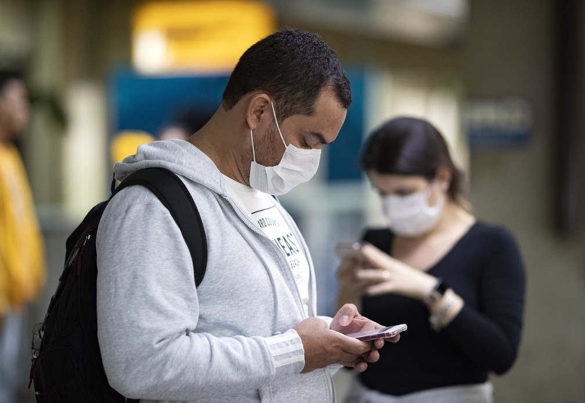

O Centro para o Controle e Prevenção de Doenças (CDC), autoridade nacional de saúde, aconselhou no sábado à noite aos moradores da região que não viajem, exceto em casos essenciais.
Uma quarentena deste tipo teria sido a medida mais dura adotada pelo governo dos Estados Unidos para frear a propagação da doença.
Durante o sábado, o presidente cogitou a possibilidade de colocar o estado de Nova York em quarentena, mas sem revelar os detalhes sobre o alcance da medida.
Os Estados Unidos registram atualmente mais de 120.000 casos confirmados e mais de 2.100 mortes provocadas pela covid-19.
O estado de Nova York é, de longe, o mais afetado pelo coronavírus nos Estados Unidos, com mais de 53.000 casos e 672 mortes.
"Nova York, Nova Jersey, talvez um ou dois lugares a mais, algumas partes de Connecticut, estou pensando", afirmou Trump no início da tarde.
Vários juristas questionaram a possibilidade do presidente americano impor tal medida.
 O republicano afirmou que medida "não teria impacto" para o comércio entre os estados envolvidos e o restante do país.
O governador de Nova York, Andrew Cuomo, que conversou com Trump no sábado, disse que o assunto não foi tratado pelos dois. "Eu nem sei o que isso significa", disse Cuomo em uma entrevista coletiva.
"Não sei como isso (isolamento compulsório) pode ser legalmente aplicado. E do ponto de vista médico, não sei o que se pode fazer", disse Cuomo. "Mas posso lhe dizer que não gosto do tom. Não entendo o que é, mas não gosto do tom", disse o governador.
Ao ser questionado pelo canal CNN sobre a possibilidade de Washington fechar as fronteiras estaduais, Cuomo advertiu que seria uma decisão "ilegal", similar a "uma declaração de guerra contra os estados" da União.
"Acredito que paralisaria a economia. Surpreenderia os mercados em uma escala sem precedentes. Como governador, não fecharei minhas fronteiras", completou.
Andrew Cuomo recordou que os estados de Nova York, Nova Jersey e Connecticut já paralisaram todas as atividades não essenciais e pediram a seus habitantes que permaneçam em casa.
Comentários: